地政学
サンディエゴは太平洋艦隊の港湾、メキシコ国境、太平洋への海路が交わる都市です。ティフアナとは壁で隔てられつつ、通勤、家族、医療、買物、製造で結ばれます。国境待ち時間も含め、安全保障と日常が近接する街です。
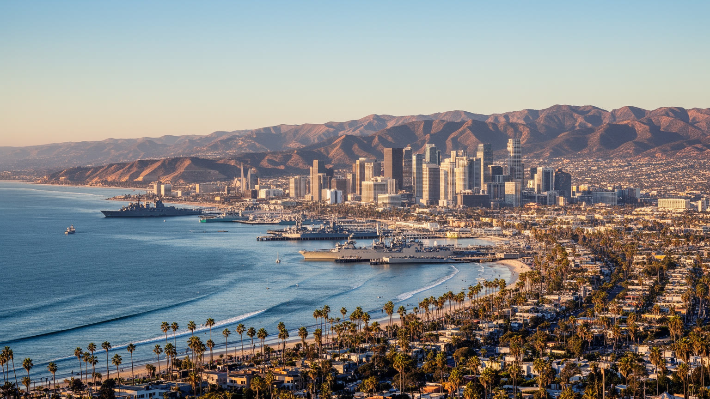
🇺🇸 アメリカ合衆国 / カリフォルニア州 / World City Atlas
太平洋岸の軍港、研究都市、観光都市であり、ティフアナと日常的につながる国境都市です。海軍、防衛、バイオ、大学、ビーチ文化、移民労働、住宅費、水リスクが穏やかな気候の下で重なります。
都市の骨格
サンディエゴは、海に開いた穏やかな観光都市であると同時に、海軍基地、防衛産業、大学研究、移民労働、ティフアナとの通勤と消費が重なる実務的な国境都市です。
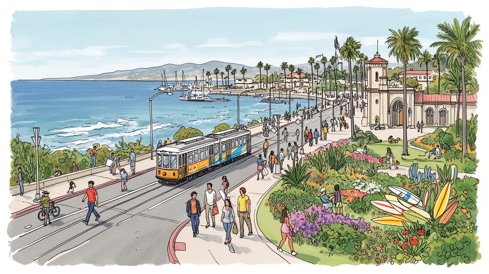
サンディエゴは太平洋艦隊の港湾、メキシコ国境、太平洋への海路が交わる都市です。ティフアナとは壁で隔てられつつ、通勤、家族、医療、買物、製造で結ばれます。国境待ち時間も含め、安全保障と日常が近接する街です。
海軍、防衛、造船、通信、バイオ医薬、大学、観光、外食、建設が雇用を支えます。研究者や軍関係者の周囲で、越境労働者、介護、清掃、厨房、ホテル、港湾の仕事が都市の基礎を動かします。賃金差も近くに並びます。
メキシコ系文化、カトリック教会、移民の市場、サーフィン、クラフトビール、大学文化、軍人家族の暮らしが混ざります。国境の食と英西二言語の生活が、街の明るさと複雑さを同時に形づくります。海辺の祭りも日常です。
旅行者は海岸、動物園、バルボア公園、港を楽しみますが、住民は高い家賃、車通勤、水不足、山火事、国境待ち時間と向き合います。穏やかな気候の価値は、生活費の重さと切り離せません。足元の負担も見えます。
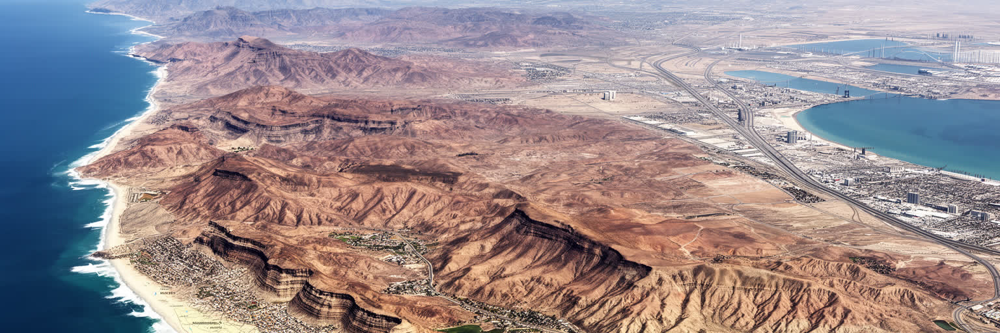
サンディエゴを読む入口は、太平洋岸の明るい海だけではありません。北にはロサンゼルスへ続く南カリフォルニアの都市回廊があり、南にはティフアナとの国境がほぼ市街地の延長として接しています。海岸線、入り江、メサ状の台地、峡谷、乾いた内陸丘陵は、住宅地、軍用地、研究拠点、高速道路の配置を決めてきました。湾は軍港と商港の基盤になり、国境は労働、買物、家族、医療、教育、観光を毎日動かします。地図上の線は明確でも、生活圏は線を越えて広がるため、税関の待ち時間、ビザ、治安報道、為替、燃料価格までが都市の実感になります。太平洋岸の開放感は、この緊張を隠すことがあります。サンディエゴの地政学は首都の外交ではなく、港の警備、国境ゲート、通勤車列、救急医療、学校の言語支援、家族の移動の中に現れます。海と国境が近い都市だからこそ、開かれていることと管理されていることが同じ風景に重なります。訪れる側が海岸だけを見るなら、この都市の半分を見落とします。丘陵の上から湾と南の市街地を同時に眺めると、サンディエゴが観光地である前に、太平洋とメキシコに向いた境界都市であることが分かります。さらに東の乾いた山地へ目を向けると、沿岸の快適さは限られた地形に集中していることも分かります。都市の余白は広く見えて、実際には水、基地、保護地、国境管理によって細かく区切られています。
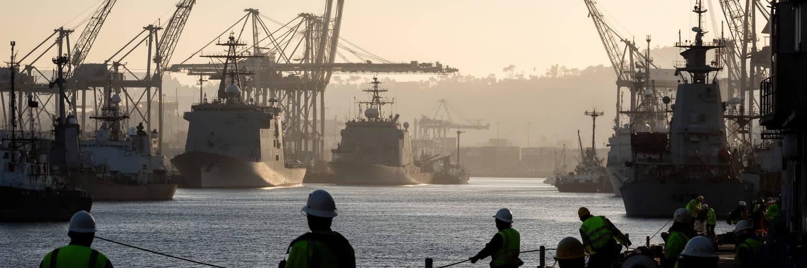
サンディエゴ湾は、観光客にとっては遊覧船や海辺の散歩道の景色ですが、都市の骨格としては米海軍と防衛産業の港です。基地、艦艇の整備、造船修理、訓練、補給、通信、防衛企業、退役軍人向け医療、軍人家族の住宅需要が、湾岸と内陸の地域経済を厚くしています。海軍の存在は高い賃金や安定した契約を生む一方、土地利用、騒音、安全保障上の制約、軍事予算への依存ももたらします。港の労働は制服を着た人だけでは成立しません。整備士、溶接工、技術者、警備、清掃、食堂、事務、物流、医療、教育が軍港の日常を支えています。軍人の転勤は学校や住宅市場に独特の流動性を生み、退役後に定住する人も多いです。太平洋の緊張が高まれば、サンディエゴの港はニュースの背景ではなく、実際に艦艇と人員を動かす拠点になります。平和な海辺のイメージと軍事都市の現実が隣り合う点に、この都市の複雑さがあります。観光の港、商業の港、軍の港は同じ水面を共有しているため、経済と安全保障を切り離して考えることはできません。湾の景観を読むことは、都市が太平洋の秩序にどのように組み込まれているかを読むことでもあります。基地周辺の店、学校、診療所、賃貸住宅は、軍の人の流れに合わせて季節ごとに表情を変えます。国防の大きな制度は、日々の買物や子どもの転校にも及んでいます。港を歩くと、軍事と暮らしの距離が驚くほど近いです。
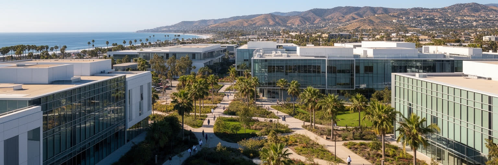
サンディエゴのもう一つの顔は、海軍港湾とは違う静かな研究都市です。カリフォルニア大学サンディエゴ校、ソーク研究所、スクリップス研究所、医療機関、バイオ医薬企業、通信技術の企業群が、ラホヤからトーリー・パインズ周辺にかけて密に集まります。基礎研究、臨床試験、創薬、ゲノム、医療機器、海洋科学、データ解析がつながり、大学院生、研究者、起業家、特許弁護士、投資家、実験補助者が同じ都市圏で働きます。研究産業は高い賃金と国際的人材を引き寄せるが、研究費の競争、短期契約、住宅費、研究成果の商業化をめぐる圧力も大きいです。実験室の清潔なイメージの周囲には、動物管理、廃棄物処理、施設管理、清掃、配送、保育、飲食の労働があります。大学は都市に知的な評判を与えるだけでなく、移民の学生、軍から転じた技術者、地元高校から進む若者の上昇経路にもなります。サンディエゴのバイオ集積は、気候の良さだけで生まれたものではありません。連邦資金、軍事研究、医療市場、大学の蓄積、起業文化が重なった結果です。海を望む研究拠点を歩くと、リゾートの穏やかさと高度な競争が同じ空気の中にあることが見えてきます。研究成果が都市の富になるには、住宅、交通、保育、移民ビザの支援も欠かせません。知識産業の強さは、論文や特許だけでなく、研究者が暮らし続けられる条件にも左右されます。
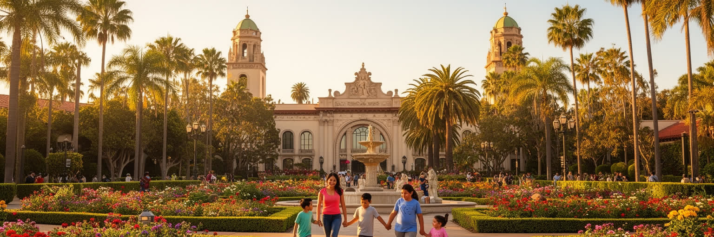
サンディエゴ観光の中心には、海岸だけでなくバルボア公園があります。博物館、劇場、庭園、動物園、歴史建築、散歩道がまとまり、都市の文化的な入口として機能しています。スペイン植民地風の建築は、南カリフォルニアらしい美しい舞台をつくる一方、土地の先住民史、植民地化、展示の視点をどう扱うかという問いも抱えます。動物園は世界的な集客力を持ち、保全研究、教育、家族旅行、ホテル、飲食、交通を結びつけます。観光産業は雇用を広げるが、ホテル清掃、厨房、駐車場、警備、チケット販売、ライドシェアのような低賃金で不安定な仕事にも支えられています。港の遊覧、ガスランプ地区、ビーチ、会議場、PadresやAztecsのスポーツ観戦は、同じ都市の別々の観光回路を作ります。旅行者にとってサンディエゴは安全で快適な都市に見えやすいが、繁忙期の賃料、労働時間、公共空間の管理、ホームレス対策は住民の生活と直結します。バルボア公園の魅力は、単なる名所の集積ではなく、観光客と地元の家族、学生、高齢者が同じ緑地を使うところにあります。都市が観光で稼ぐほど、その公共性を守れるかどうかが問われます。展示室の外で休む人、学校行事で訪れる子ども、週末に芝生で過ごす家族まで含めて、公園は市民の共有財産です。観光の成功は、その日常利用を押しのけない形で測られるべきです。名所を結ぶ歩道やバスの使いやすさも、旅と生活の質を同時に左右します。
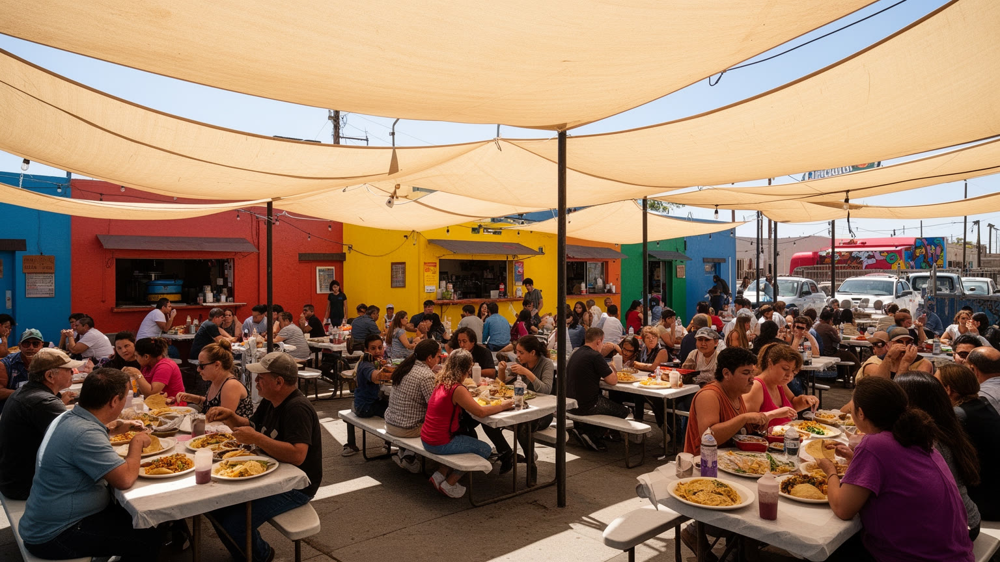
サンディエゴの食文化を語るとき、メキシコとの距離は欠かせません。タコス、ブリトー、魚介、サルサ、アグアフレスカ、パン屋、市場、フードトラックや市場は、観光用の異国趣味ではなく、国境をまたぐ家族と労働の延長にあります。バハ・カリフォルニアの魚介、ティフアナの屋台文化、カリフォルニアの農産物、クラフトビール、夜市、健康志向の外食が混ざり、サンディエゴらしい軽さと濃さを作っています。厨房ではスペイン語が飛び交い、仕込み、配達、皿洗い、深夜営業、移民労働、家族経営が味の背後を支えます。人気店が増えるほど、家賃上昇や観光化で古い食堂が押し出される危険もあります。食は国境を柔らかく見せるが、実際には移民資格、賃金、通勤、検問、税関、仕入れ規制と結びついています。サンディエゴのメキシコ料理は、単にアメリカで発展した一ジャンルではなく、二つの都市圏が毎日近くで暮らすことから生まれる生活の味です。海辺で食べる魚のタコスや球場帰りの一杯にも、港、市場、農場、越境する家族の歴史が折り込まれています。食卓を読むと、国境は分断線であると同時に、都市文化を豊かにする接触面でもあることが分かります。外食の流行は速く変わるが、近所の食堂や市場に残る味は、移住してきた家族が都市に根を下ろす方法でもあります。食は観光の入口であり、労働と記憶の記録でもあります。昼の一皿にも、海と農地と国境の距離が折り重なります。
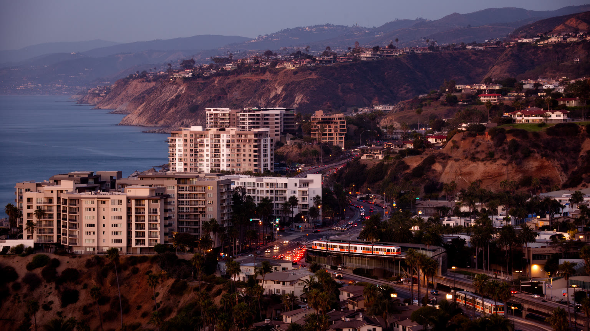
サンディエゴの暮らしで最も切実な問題の一つは住宅です。穏やかな気候、海岸、大学、軍、研究産業、観光が人を引き寄せる一方、供給できる土地は海、峡谷、軍用地、保護地、低密度住宅地に囲まれて限られます。海に近い地区ほど価格は高く、若い研究者、教師、看護師、軍人家族、ホテル労働者、移民世帯は、家賃と通勤距離の間で難しい選択を迫られます。郊外へ移れば部屋は広くなりますが、車の維持費、高速道路の渋滞、学校区、保育、山火事リスクが負担になります。海辺の美しい景観は都市の資産ですが、同時に住む権利を希少な商品に変える力を持ちます。短期賃貸や別荘需要が強い地区では、地域の生活感が薄れ、働く人が職場の近くに住めなくなります。住宅問題は貧困層だけの問題ではなく、中間層の職業を都市から遠ざけ、研究や観光や医療の基盤を弱らせます。サンディエゴが魅力的であり続けるには、海岸の景観を守るだけでなく、集合住宅、公共交通、家賃支援、ホームレス支援を現実的に組み合わせる必要があります。住まいの地図を見れば、誰が太平洋の近くで暮らせる都市なのかがはっきり表れます。家賃の高さは、家族形成、転職、大学卒業後の定着にも影響します。研究や軍や観光の人材を集める都市ほど、働く人が離れずに住める仕組みを持つ必要があります。住宅の不足は、都市の魅力そのものをゆっくり削る問題でもあります。
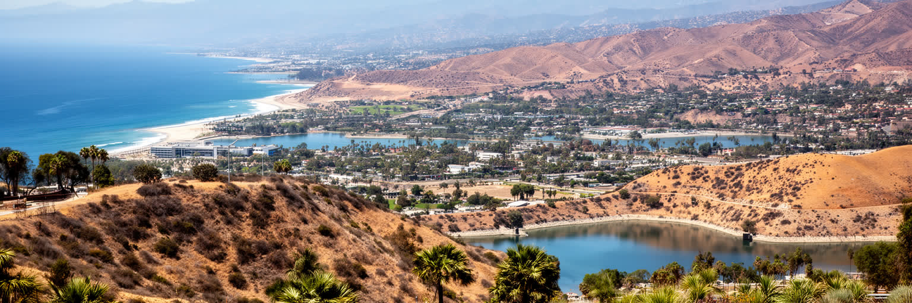
サンディエゴの気候は、訪問者には理想的に見えます。夏は海風に救われ、冬は温暖で、屋外で過ごす時間が長いです。しかしその快適さは、水の制約と火災リスクの上に成り立ちます。降雨は多くなく、都市圏は遠方の水源、貯水、配水、節水、再生水、海水淡水化、価格政策に頼っています。庭の芝生、ホテルのプール、農業、研究施設、基地、住宅開発が同じ水を取り合うため、干ばつ期には生活様式そのものが問われます。内陸の丘陵や峡谷では乾いた植生が燃えやすく、サンタアナ風が吹けば山火事は住宅地へ迫ります。火災は自然現象だけでなく、開発の場所、避難路、保険、停電、消防力、低所得世帯の回復力と結びつきます。海岸の穏やかさは気候リスクを見えにくくするが、気温上昇、海面上昇、侵食、暑熱、煙の影響は都市の日常に入ってくります。サンディエゴの環境政策は、景観保全の美しい言葉だけでは足りません。水をどう確保し、誰が高い料金を負い、危険な斜面にどこまで住むのかを決める実務です。乾いた空の下で快適に暮らすことは、見えにくいインフラと慎重な土地利用に支えられています。節水型の庭、再利用水、火災に強い建材、避難計画は、環境意識の飾りではなく生活の条件になります。快適な気候を守るには、日常の選択を地域全体で変える必要があります。晴れの多さは贈り物であると同時に、都市管理への厳しい宿題でもあります。
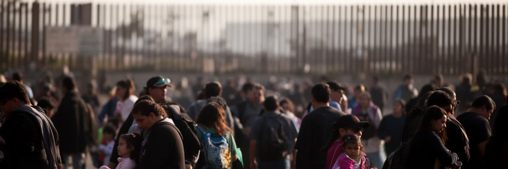
サンディエゴとティフアナは、別々の国にありますが一つの大きな生活圏として動いています。国境を越えて通勤する人、アメリカ側で学ぶ子ども、メキシコ側に家族を持つ住民、医療や歯科を求めて南へ向かう人、工場や物流に関わる企業が、毎日の移動を作ります。国境ゲートの待ち時間は、単なる交通情報ではなく、睡眠時間、保育、仕事の遅刻、売上、体調を左右する生活条件です。移民政策が厳しくなれば、家族は分断され、難民申請者や非正規滞在者は都市の影で不安定に暮らします。農業、建設、清掃、介護、厨房、ホテル、配達には、メキシコ系や中米系の労働が深く関わるが、その貢献は観光の明るい表面から見えにくいです。サンディエゴの多文化性は、祭りや食だけでなく、法律、警察、学校、病院、労働保護の仕組みによって試されます。国境の壁は強い象徴ですが、壁の周囲では人のつながりが絶えず工夫されます。ティフアナを外部として扱うのではなく、同じ地域のもう一つの都市として見ると、サンディエゴの経済と文化はより正確に見えます。越境生活の現実は、国際関係を家庭の予定表と職場のシフトに変えます。英語とスペイン語が行き交う学校や診療所では、翻訳と信頼が公共サービスの質を決めます。国境に近い都市ほど、人を管理する制度と人を支える制度の差がはっきり現れます。その差を埋める地域組織や法律支援も、都市を支える重要な基盤です。
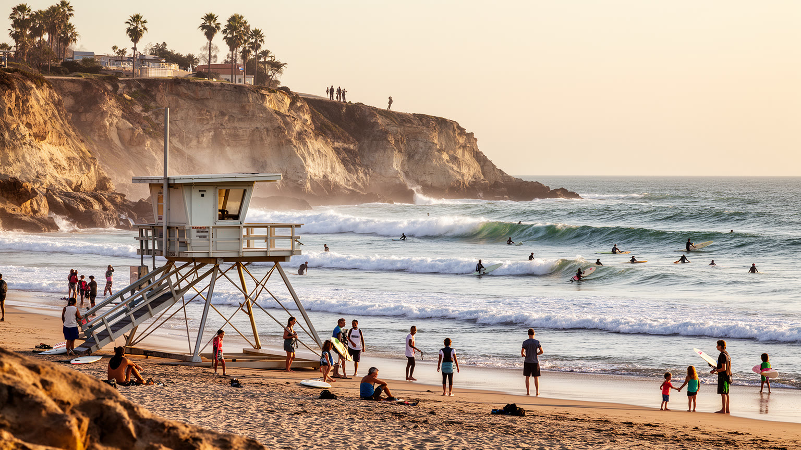
サンディエゴのビーチ文化は、観光ポスターの背景であると同時に、住民の身体感覚を形づくる公共空間です。サーフィン、ランニング、犬の散歩、ビーチバレー、Padresの試合帰り、桟橋の釣り、夕日の集まり、大学生の週末、軍人家族の外出が、海岸を日常の居間のように使います。波を読む技術、潮、海流、風、ボードショップ、救命員、駐車場、シャワー、ゴミ回収、沿岸警備が、その自由な風景を支えています。サーフ文化は白人中産層の象徴として語られがちですが、実際にはメキシコ系、アジア系、軍関係者、学生、観光客が重なる多様な空間でもあります。一方で、海岸近くの住宅価格は高く、誰もが気軽に海のそばで暮らせるわけではありません。海辺の公共性を守るには、駐車、交通、アクセス、環境保全、ホームレス支援、騒音管理を丁寧に扱う必要があります。海岸侵食や水質汚染、国境を越える下水問題も、楽園のイメージの外側にある重要な論点です。サンディエゴのサーフ文化は、のんびりした気分だけではなく、海を共有財産として使う作法です。砂浜で過ごす時間は都市の特権ですが、その特権を広く開いたまま保てるかどうかが、海辺の都市の成熟を示しています。朝の波を待つ人と、夜明け前に清掃や配達へ向かう人は、同じ海岸都市の時間を分け合っています。ビーチの自由は、見えにくい管理と労働に支えられて初めて保たれます。
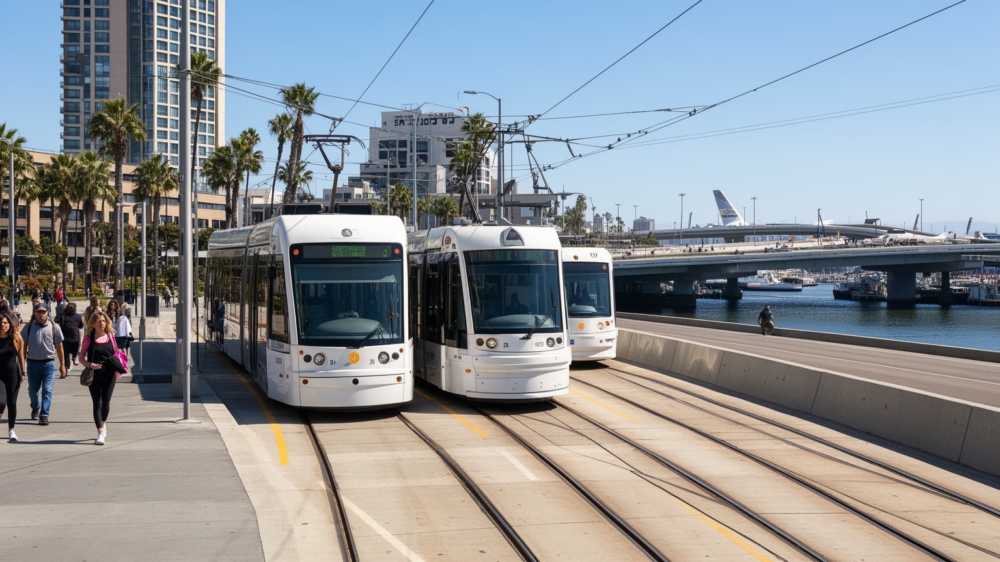
サンディエゴの移動は、車社会の南カリフォルニアらしさと、国境都市としての公共交通が重なっています。高速道路は海岸、中心部、北部の研究拠点、内陸住宅地、軍事施設、国境を結び、通勤と物流を支えます。渋滞は住宅の選択、始業時間、保育、買物、空港利用を左右し、車を持てない人には都市の機会を狭めます。トロリーのベルはダウンタウン、大学、郊外、国境近くを結び、特にサンイシドロ方面の路線は越境生活の重要な足になります。空港は市街地に近く便利ですが、滑走路の制約や騒音、拡張の難しさも抱えます。港、空港、鉄道、バス、ライドシェア、自転車道は同じ都市で使われていても、利用できる層は均等ではありません。観光客には移動が簡単に見えても、ホテル労働者や学生、夜の飲食店員、低所得世帯にとっては運賃、乗り換え、夜間便、安全な歩道が大きな問題になります。交通政策は単なる混雑対策ではなく、国境、大学、海軍基地、観光地、住宅地をどう公平につなぐかの設計です。サンディエゴのトロリーは、広い車社会の中で公共交通の骨格を作ろうとする試みであり、その成否は都市の包摂力を測る指標になります。新しい住宅を駅の近くに増やせるか、ビーチや研究拠点までバスを使いやすくできるかで、車に頼らない暮らしの現実性は変わります。移動の選択肢は、住宅政策と同じくらい都市の公平性を左右します。駅前の密度を高める判断は、景観論だけでなく生活費の議論でもあります。
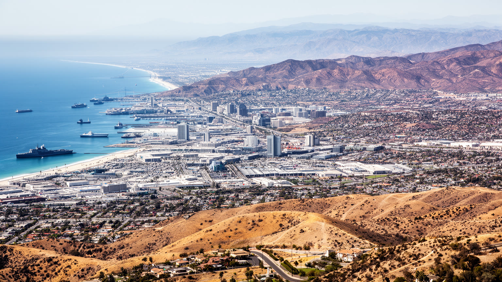
サンディエゴを一つの言葉で語れば、国境と海辺に立つ研究軍港都市です。太平洋の明るい気候、ビーチ、動物園、バルボア公園は強い観光イメージを作りますが、その下には海軍基地、防衛契約、バイオ研究、大学、国境通勤、移民労働、高い住宅費、水不足、山火事リスクが積み重なります。ティフアナとの近さは、食、家族、商業、医療、製造、労働を豊かにする一方、国境管理と移民政策の重さを日常へ持ち込みます。サンディエゴの経済はロサンゼルスほど巨大な総合都市ではありませんが、太平洋安全保障、生命科学、観光、越境生活が一体になった独自の重要性を持ちます。海辺の穏やかさだけを見れば、この都市は快適なリゾートに見えます。しかし湾の艦艇、研究所の実験室、国境ゲートの車列、ホテルの清掃、内陸の家賃負担、乾いた丘陵の火災リスクまで重ねると、サンディエゴは二十一世紀の沿岸都市が抱える矛盾を鮮明に示します。魅力は本物ですが、その魅力は多くの見えにくい労働とインフラに支えられています。都市を読むには、海岸の光と国境の影を分けず、同じ地域の生活として捉える必要があります。旅の視線を少し内陸と南へ動かすだけで、快適な都市像の背後にある軍事、研究、移民、水、住宅の関係が見えてきます。そこにサンディエゴの現代性があります。この都市の柔らかな印象は、複雑な境界を毎日調整する実務の上に成り立っています。